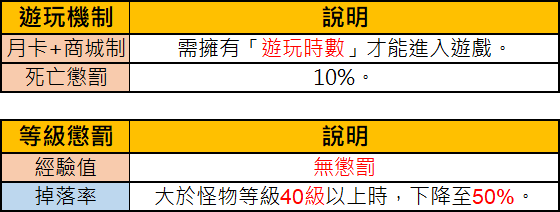

Game Basics (基礎介紹)
So findest du dich in Ragnarok Zero schnell zurecht — das integrierte MENU-Poring und das „Hints"-System liefern alle Grundlagen direkt im Spiel, ohne das Wiki konsultieren zu müssen.
📘 Worum geht's?
Damit Abenteurer möglichst reibungslos in die Welt von Ragnarok Zero eintauchen können, wurde das Basissystem überarbeitet. Es umfasst neue Spielumgebungs-Einstellungen sowie ein komplett neu integriertes MENU-System mit vollständiger Einführung in die Spielgrundlagen.
⚙️ Spielumgebungs-Einstellungen
Die grundlegenden Optionen für UI, Hotkeys und Client-Verhalten findest du direkt im Options-Menü. Sie ersetzen keine klassischen RO-Features, ergänzen aber die Quality-of-Life-Werkzeuge für Einsteiger.

📋 Spielmechaniken — Deutsch aufklappen
Übersicht über die grundlegenden Spielmechaniken und Sterbe-Strafen in Ragnarok Zero.
| Spielmechanik | Beschreibung |
|---|---|
| Monatskarte + Itemshop-System | Man benötigt 'Spielzeit', um das Spiel zu betreten. |
| Todesstrafe | 10% |
Die Liste beschreibt den Zugang zum Spiel und den Verlust bei Charaktertod.
🎯 Schritt für Schritt: Die Basis-Einführung nutzen
Schritt 1 — MENU (粉紅波利) öffnen
Nach dem Login findest du unten rechts das MENU-Icon in Form eines Pink Poring. Klick drauf und wähle dann die Hint-Box (Fragezeichen-Icon).

📋 Hauptmenü-Übersicht — Deutsch aufklappen
Das Bild zeigt das Hauptmenü-Interface von Ragnarok Zero mit verschiedenen Symbolen für Spielsysteme, wobei der Hilfe-Button markiert ist.
- Character (Persönlicher Status)
- Equipment (Ausrüstung)
- Inventory (Inventar)
- Skills (Fertigkeiten)
- Party (Gruppe)
- Guild (Gilde)
- Quest Log (Aufgabenliste)
- World Map (Weltkarte)
- Navigation (Navigation)
- Options (Optionen)
- Bank (Bank)
- Replay (Wiedergabe)
- Mail (Post)
- Achievements (Erfolge)
- Cash Shop (Shop)
- Shortcut Guide (Tastenkürzel-Guide)
- Attendance (Anwesenheit)
- Recruitment Center (Vermittlungsstelle)
- Help (Hilfefenster)
- Auto Battle (Automatischer Kampf)
- Reputation (Ansehen)
Der rote Pfeil und das rote Rechteck markieren das 'Help' (Hilfe) Icon im Menü.
Schritt 2 — „Vorschlagsliste" aufrufen
Beim ersten Klick wird ein zufälliger Hint angezeigt. Um gezielt zu suchen, klickst du auf „Vorschlagsliste durchsuchen" — damit landest du auf der Übersichtsseite aller verfügbaren Hints.

📋 Hilfefenster: Auto-Attack — Deutsch aufklappen
Ein Hilfefenster im Spiel, das erklärt, wie man den Auto-Attack-Modus durch Halten der Strg-Taste oder durch die Eingabe von /noctrl aktiviert und deaktiviert.
- Titel: BOX
- Modus: Auto-Attack
- Beschreibung: Wenn man beim Angriff auf ein Monster die Strg-Taste gedrückt hält, wird der Auto-Attack-Modus aktiviert, bis das Monster besiegt ist. Klicken auf eine andere Stelle hebt den Modus auf.
- Zusatz: Bei Eingabe von /noctrl kann der Auto-Attack-Modus auch ohne Halten der Strg-Taste aktiviert werden. Durch erneute Eingabe von /noctrl wird der Modus wieder deaktiviert.
- Link: Kampf: Angriff
- Link: Vorschlagsliste durchsuchen
Das Fenster enthält zudem Steuerelemente wie 'Beim Start öffnen', 'Schließen' und eine Seitenzahlanzeige (1/1).
Schritt 3 — Zur Hint-Startseite
Von hier aus führen die Kategorien direkt zu den Themen, die dich interessieren — einfach anklicken und in die Tiefe gehen.

📋 Hilfemenü und Menü-Icons — Deutsch aufklappen
Das Bild zeigt ein In-Game-Hilfefenster mit Kategorien zum Spielablauf sowie eine Übersicht der Hauptmenü-Icons am unteren rechten Bildschirmrand.
- Quest
- Combat
- Item
- Game Options Window
- Remove Restriction Effects
- Browse Recommended List
- Inventory
- Skill Window
- Party
- World Map
- Navigation
- Options
- Achievement System
- Help
- Cash Shop
- Shortcut Guide
- Attendance
- Brokerage
- Reputation
- Auto Combat
Die Liste im Hilfefenster enthält grundlegende Spielfunktionen. Die Icons rechts stellen die zentrale Benutzeroberfläche für das Charakter- und Systemmanagement dar.
📂 Welche Themen findet man?
Unter dem Bereich „Spielen" gibt es detaillierte Unterkategorien, darunter:
- Quests — Aufbau und Ablauf von Missionen
- Combat — Grundlagen zu Kampf, Targeting und Cooldowns
- Items — Itemtypen, Crafting, Handel
- …und weitere Unterbereiche für Progression, Klassen und Endgame
Die Schritte 1–3 kannst du beliebig wiederholen, um jedes Thema aufzurufen.
💡 Praxis-Tipps
- Für Einsteiger Pflicht: Gerade die Bereiche Combat und Items klären viele Zero-Besonderheiten, die klassische RO-Veteranen überraschen könnten
- Jederzeit verfügbar: Das MENU-Poring bleibt durchgängig erreichbar — auch mitten im Kampf
- Randomisierte Hints: Der erste Klick liefert bewusst einen zufälligen Tipp — gut als Daily-Mini-Infohappen